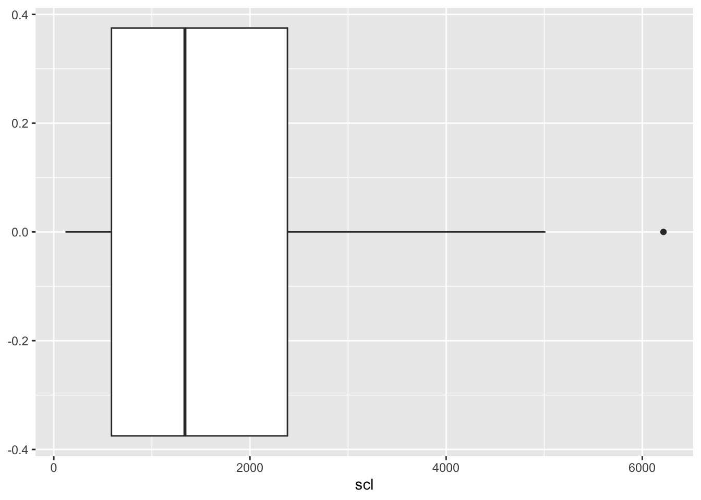

Útil para datos que varían en varios órdenes de magnitud o que están muy sesgados a la derecha.
Fórmula: ( (X + 1) ) (se suma 1 para evitar problemas con valores de 0).
Raíz Cuadrada (sqrt):
Ayuda con datos que tienen una distribución de Poisson o donde la variabilidad crece con el valor de la variable.
Fórmula: ( ).
Ejemplo Práctico en Fitopatología
Imagina que tienes datos de la severidad de una enfermedad en diferentes cultivos y notas que los datos están muy sesgados a la derecha (hay muchos cultivos con baja severidad y pocos con alta severidad).
Explora tus Datos:
Histograma muestra datos sesgados a la derecha.
Prueba de normalidad muestra que los datos no son normales.
Elige la Transformación:
Decides usar la transformación logarítmica porque ayuda a normalizar datos sesgados.
Aplica la Transformación:
Transformas los datos usando ( ( + 1) ).
Revisa:
Vuelves a hacer un histograma y notas que los datos transformados se parecen más a una distribución normal.
Realiza el Análisis:
Ahora haces tu ANOVA o regresión con los datos transformados y obtienes resultados más válidos.
Documenta:
Escribes en tus notas que transformaste los datos de severidad usando ( (X + 1) ) porque los datos originales estaban sesgados y no eran normales.
Transformar datos puede parecer complicado, pero es una herramienta muy útil para asegurar que tus análisis estadísticos sean válidos y significativos.
Paso a Paso
Antes de realizar un análisis estadístico en R, puede ser necesario transformar los datos dependiendo de la naturaleza de los datos y los requisitos del análisis. Las transformaciones pueden ayudar a cumplir con los supuestos de los análisis estadísticos, como la normalidad y la homogeneidad de variancias.
Exploración de los Datos
Antes de realizar transformaciones, necesitamos entender la naturaleza de los datos. Vamos a familiarizarnos con un conjunto de datos, en este caso, el conjunto de datos mofo, presente dentro del archivo de datos datos-diversos.xlsx.
Aquí tienes el código ajustado con el texto añadido para cada paso del análisis de datos, siguiendo la guía proporcionada:
Cargando las Librerías Necesarias
Codigo
# Evita que se muestren advertencias y mensajes#| warning: false#| message: false# Cargar librerías necesariaslibrary(tidyverse) # Para manipulación y visualización de datoslibrary(readxl) # Para leer archivos de Excellibrary(DT) # Para visualizar tablas dinámicaslibrary(patchwork) # Para juntar gráficos
Cargando el Conjunto de Datos
Codigo
# Leer el conjunto de datos 'mofo' desde el archivo 'dados-diversos.xlsx'mofo <-read_excel("dados-diversos.xlsx", "mofo")# Mostrar los datos en una tabla interactivamofo %>% DT::datatable(extensions ='Buttons', options =list(dom ='Bfrtip', buttons =c('excel', "csv")) )
Explora tus Datos
Para entender mejor nuestros datos, comenzamos con una exploración inicial. Esta fase incluye visualizar los datos y realizar pruebas de normalidad.
Visualización Inicial de los Datos
Podemos visualizar los datos de diferentes maneras, como gráficos de dispersión, histogramas y boxplots. Inicialmente, visualizaremos los datos de incidencia (inc) por tratamientos y por estudio.
Codigo
# Gráfico de dispersión de la incidencia por tratamientos y estudiosmofo |>ggplot(aes(treat, inc)) +facet_wrap(~study) +# Facetas por estudiogeom_point() # Puntos de dispersión
Histograma de Incidencia y Escleródio
Los histogramas nos permiten ver la distribución de nuestros datos. Aquí, creamos histogramas para las variables inc y scl.
Codigo
# Histograma de incidenciainc <- mofo |>ggplot(aes(inc)) +geom_histogram()inc
Histograma de escleródio
mofo |> ggplot(aes(scl)) + geom_histogram()
### Boxplot de Escleródio
El boxplot ayuda a visualizar la distribución y posibles outliers en los datos de `scl`.
::: {.cell}
```{.r .cell-code}
# Boxplot de escleródio
scl <- mofo |>
ggplot(aes(scl)) +
geom_boxplot()
scl

:::
Juntar Gráficos con Patchwork
Podemos juntar los gráficos anteriores para una visualización combinada.
Codigo
# Juntar los gráficos de incidencia y escleródioinc / scl
1. Prueba de Normalidad
Podemos usar pruebas estadísticas como la prueba de Shapiro-Wilk para verificar la normalidad de nuestros datos.
Codigo
# Prueba de Shapiro-Wilk para la normalidadshapiro.test(mofo$scl)
Shapiro-Wilk normality test
data: mofo$scl
W = 0.89096, p-value = 0.0001851
2. Elige la Transformación
Dado que los datos están sesgados a la derecha y no son normales, decidimos usar la transformación logarítmica porque ayuda a normalizar datos sesgados.
Cálculo de la Media
Antes de aplicar la transformación, calculamos la media de la columna scl.
Codigo
# Calcular la media de la columna 'scl'mean(mofo$scl)
[1] 1639.096
3. Aplica la Transformación
Aplicamos la transformación logarítmica a nuestros datos. La fórmula usada es (( + 1)) para evitar problemas con valores cero.
Transformación Logarítmica
Codigo
# Transformar los datos usando logaritmomofo2 <- mofo |>mutate(scl2 =log(scl +1)) # Crear nueva columna 'scl2' con el logaritmo de 'scl'# Mostrar los datos transformados en una tabla interactivamofo2 %>% DT::datatable(extensions ='Buttons', options =list(dom ='Bfrtip', buttons =c('excel', "csv")) ) |>formatRound("scl2", 2)
Histograma de Datos Transformados
Revisamos la distribución de los datos transformados mediante un histograma.
Codigo
# Visualizar los datos transformados en logaritmo con un histogramamofo2 |>ggplot(aes(scl2)) +geom_histogram(bins =10)
Prueba de Normalidad en Datos Transformados
Verificamos si la transformación logarítmica ha mejorado la normalidad de los datos.
Codigo
# Prueba de Shapiro-Wilk para la normalidad en datos transformadosshapiro.test(mofo2$scl2)
Shapiro-Wilk normality test
data: mofo2$scl2
W = 0.96708, p-value = 0.1585
4. Revisa
Vuelves a hacer un histograma y notas que los datos transformados se parecen más a una distribución normal. Esto sugiere que la transformación ha sido efectiva.
5. Realiza el Análisis
Ahora que los datos están transformados y tienen una distribución más normal, puedes proceder a realizar el análisis estadístico, como ANOVA o regresión.
ANOVA con Datos Transformados
Codigo
# Realizar ANOVA con los datos transformadosanova_result <-aov(scl2 ~ treat, data = mofo2)summary(anova_result)
Df Sum Sq Mean Sq F value Pr(>F)
treat 1 6.92 6.915 8.924 0.00435 **
Residuals 50 38.75 0.775
---
Signif. codes: 0 '***' 0.001 '**' 0.01 '*' 0.05 '.' 0.1 ' ' 1
6. Documenta
Es importante documentar que transformaste los datos de scl usando (( + 1)) porque los datos originales estaban sesgados y no eran normales. Esto garantiza la transparencia y reproducibilidad de tu análisis.
Documentación
Codigo
# Documentación del procesonotas <-"Transformamos los datos de severidad usando log(scl + 1) porque los datos originales estaban sesgados y no eran normales."writeLines(notas, "documentacion.txt")
Transformación de Raíz Cuadrada (opcional)
Como comparación, también podemos aplicar la transformación de raíz cuadrada y revisar su efecto.
Transformación de Raíz Cuadrada
Codigo
# Transformar los datos usando raíz cuadradamofo2 <- mofo |>mutate(scl2 =sqrt(scl)) # Crear nueva columna 'scl2' con la raíz cuadrada de 'scl'# Mostrar los datos transformados en una tabla interactivamofo2 %>% DT::datatable(extensions ='Buttons', options =list(dom ='Bfrtip', buttons =c('excel', "csv")) ) |>formatRound("scl2", 2)
Codigo
# Visualizar los datos transformados en raíz cuadrada con un histogramamofo2 |>ggplot(aes(scl2)) +geom_histogram(bins =10)
Prueba de Normalidad en Datos Transformados (Raíz Cuadrada)
Codigo
# Prueba de Shapiro-Wilk para la normalidad en datos transformados (raíz cuadrada)shapiro.test(mofo2$scl2)
Shapiro-Wilk normality test
data: mofo2$scl2
W = 0.97263, p-value = 0.2724
Este enfoque completo asegura que cada fase del análisis de datos se realice de manera lógica y coherente, desde la exploración inicial hasta la documentación final.
Source Code
## Transformación de Datos (log) y (sqrt)1. **Transformación Logarítmica (log)**: - Útil para datos que varían en varios órdenes de magnitud o que están muy sesgados a la derecha. - Fórmula: ( \log(X + 1) ) (se suma 1 para evitar problemas con valores de 0).2. **Raíz Cuadrada (sqrt)**: - Ayuda con datos que tienen una distribución de Poisson o donde la variabilidad crece con el valor de la variable. - Fórmula: ( \sqrt{X} ).### Ejemplo Práctico en FitopatologíaImagina que tienes datos de la severidad de una enfermedad en diferentes cultivos y notas que los datos están muy sesgados a la derecha (hay muchos cultivos con baja severidad y pocos con alta severidad).1. **Explora tus Datos**: - Histograma muestra datos sesgados a la derecha. - Prueba de normalidad muestra que los datos no son normales.2. **Elige la Transformación**: - Decides usar la transformación logarítmica porque ayuda a normalizar datos sesgados.3. **Aplica la Transformación**: - Transformas los datos usando ( \log(\text{severidad} + 1) ).4. **Revisa**: - Vuelves a hacer un histograma y notas que los datos transformados se parecen más a una distribución normal.5. **Realiza el Análisis**: - Ahora haces tu ANOVA o regresión con los datos transformados y obtienes resultados más válidos.6. **Documenta**: - Escribes en tus notas que transformaste los datos de severidad usando ( \log(X + 1) ) porque los datos originales estaban sesgados y no eran normales.Transformar datos puede parecer complicado, pero es una herramienta muy útil para asegurar que tus análisis estadísticos sean válidos y significativos.### Paso a PasoAntes de realizar un análisis estadístico en R, puede ser necesario transformar los datos dependiendo de la naturaleza de los datos y los requisitos del análisis. Las transformaciones pueden ayudar a cumplir con los supuestos de los análisis estadísticos, como la normalidad y la homogeneidad de variancias.## Exploración de los DatosAntes de realizar transformaciones, necesitamos entender la naturaleza de los datos. Vamos a familiarizarnos con un conjunto de datos, en este caso, el conjunto de datos `mofo`, presente dentro del archivo de datos `datos-diversos.xlsx`.Aquí tienes el código ajustado con el texto añadido para cada paso del análisis de datos, siguiendo la guía proporcionada:### Cargando las Librerías Necesarias```{r}# Evita que se muestren advertencias y mensajes#| warning: false#| message: false# Cargar librerías necesariaslibrary(tidyverse) # Para manipulación y visualización de datoslibrary(readxl) # Para leer archivos de Excellibrary(DT) # Para visualizar tablas dinámicaslibrary(patchwork) # Para juntar gráficos```### Cargando el Conjunto de Datos```{r}# Leer el conjunto de datos 'mofo' desde el archivo 'dados-diversos.xlsx'mofo <-read_excel("dados-diversos.xlsx", "mofo")# Mostrar los datos en una tabla interactivamofo %>% DT::datatable(extensions ='Buttons', options =list(dom ='Bfrtip', buttons =c('excel', "csv")) )```## Explora tus DatosPara entender mejor nuestros datos, comenzamos con una exploración inicial. Esta fase incluye visualizar los datos y realizar pruebas de normalidad.### Visualización Inicial de los DatosPodemos visualizar los datos de diferentes maneras, como gráficos de dispersión, histogramas y boxplots. Inicialmente, visualizaremos los datos de incidencia (`inc`) por tratamientos y por estudio.```{r}# Gráfico de dispersión de la incidencia por tratamientos y estudiosmofo |>ggplot(aes(treat, inc)) +facet_wrap(~study) +# Facetas por estudiogeom_point() # Puntos de dispersión```### Histograma de Incidencia y EscleródioLos histogramas nos permiten ver la distribución de nuestros datos. Aquí, creamos histogramas para las variables `inc` y `scl`.```{r}# Histograma de incidenciainc <- mofo |>ggplot(aes(inc)) +geom_histogram()inc```````{r}# Histograma de escleródiomofo |> ggplot(aes(scl)) + geom_histogram()```### Boxplot de EscleródioEl boxplot ayuda a visualizar la distribución y posibles outliers en los datos de `scl`.```{r}# Boxplot de escleródioscl <- mofo |> ggplot(aes(scl)) + geom_boxplot()scl```### Juntar Gráficos con PatchworkPodemos juntar los gráficos anteriores para una visualización combinada.```{r}# Juntar los gráficos de incidencia y escleródioinc / scl```## 1. Prueba de NormalidadPodemos usar pruebas estadísticas como la prueba de Shapiro-Wilk para verificar la normalidad de nuestros datos.```{r}# Prueba de Shapiro-Wilk para la normalidadshapiro.test(mofo$scl)```## 2. Elige la TransformaciónDado que los datos están sesgados a la derecha y no son normales, decidimos usar la transformación logarítmica porque ayuda a normalizar datos sesgados.### Cálculo de la MediaAntes de aplicar la transformación, calculamos la media de la columna `scl`.```{r}# Calcular la media de la columna 'scl'mean(mofo$scl)```## 3. Aplica la TransformaciónAplicamos la transformación logarítmica a nuestros datos. La fórmula usada es \(\log(\text{scl} + 1)\) para evitar problemas con valores cero.### Transformación Logarítmica```{r}# Transformar los datos usando logaritmomofo2 <- mofo |> mutate(scl2 = log(scl + 1)) # Crear nueva columna 'scl2' con el logaritmo de 'scl'# Mostrar los datos transformados en una tabla interactivamofo2 %>% DT::datatable( extensions = 'Buttons', options = list(dom = 'Bfrtip', buttons = c('excel', "csv")) ) |> formatRound("scl2", 2)```### Histograma de Datos TransformadosRevisamos la distribución de los datos transformados mediante un histograma.```{r}# Visualizar los datos transformados en logaritmo con un histogramamofo2 |> ggplot(aes(scl2)) + geom_histogram(bins = 10)```### Prueba de Normalidad en Datos TransformadosVerificamos si la transformación logarítmica ha mejorado la normalidad de los datos.```{r}# Prueba de Shapiro-Wilk para la normalidad en datos transformadosshapiro.test(mofo2$scl2)```## 4. RevisaVuelves a hacer un histograma y notas que los datos transformados se parecen más a una distribución normal. Esto sugiere que la transformación ha sido efectiva.## 5. Realiza el AnálisisAhora que los datos están transformados y tienen una distribución más normal, puedes proceder a realizar el análisis estadístico, como ANOVA o regresión.### ANOVA con Datos Transformados```{r}# Realizar ANOVA con los datos transformadosanova_result <- aov(scl2 ~ treat, data = mofo2)summary(anova_result)```## 6. DocumentaEs importante documentar que transformaste los datos de `scl` usando \(\log(\text{scl} + 1)\) porque los datos originales estaban sesgados y no eran normales. Esto garantiza la transparencia y reproducibilidad de tu análisis.### Documentación```{r}# Documentación del procesonotas <- "Transformamos los datos de severidad usando log(scl + 1) porque los datos originales estaban sesgados y no eran normales."writeLines(notas, "documentacion.txt")```## Transformación de Raíz Cuadrada (opcional)Como comparación, también podemos aplicar la transformación de raíz cuadrada y revisar su efecto.### Transformación de Raíz Cuadrada```{r}# Transformar los datos usando raíz cuadradamofo2 <- mofo |> mutate(scl2 = sqrt(scl)) # Crear nueva columna 'scl2' con la raíz cuadrada de 'scl'# Mostrar los datos transformados en una tabla interactivamofo2 %>% DT::datatable( extensions = 'Buttons', options = list(dom = 'Bfrtip', buttons = c('excel', "csv")) ) |> formatRound("scl2", 2)``````{r}# Visualizar los datos transformados en raíz cuadrada con un histogramamofo2 |> ggplot(aes(scl2)) + geom_histogram(bins = 10)```### Prueba de Normalidad en Datos Transformados (Raíz Cuadrada)```{r}# Prueba de Shapiro-Wilk para la normalidad en datos transformados (raíz cuadrada)shapiro.test(mofo2$scl2)```Este enfoque completo asegura que cada fase del análisis de datos se realice de manera lógica y coherente, desde la exploración inicial hasta la documentación final.